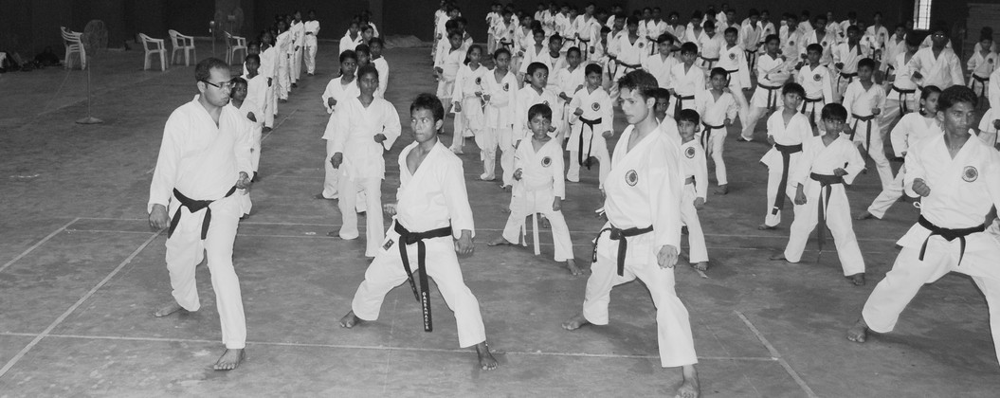
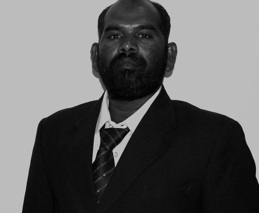
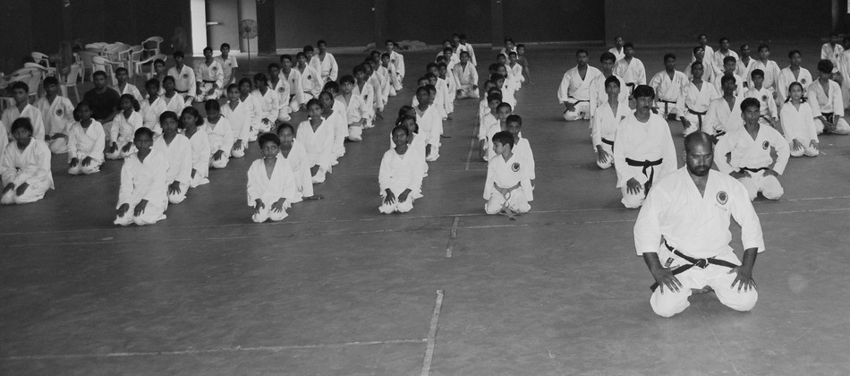
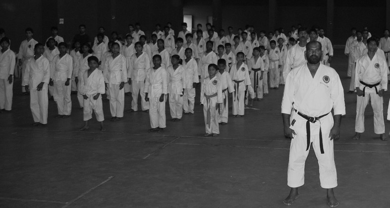
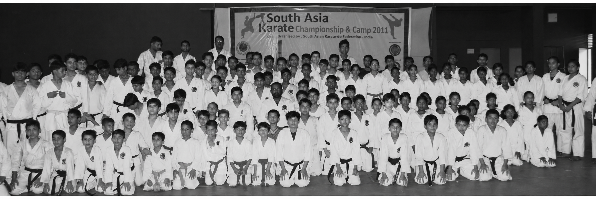

Tradition
Training rooted in Shotokan principles and connected to our Japanese lineage.
Discipline · Character · Strength
松濤館空手道日本連盟インド
Shotokan Karatedo Japan Federation India carries forward the spirit of Japanese karate through disciplined training, strong leadership, and a united community.
Our foundation
Established in 2004, SKJF India promotes karate as a path to physical ability, self-control, confidence, and lifelong character.
Training rooted in Shotokan principles and connected to our Japanese lineage.
Technical excellence built through patience, respect, repetition, and focus.
Instructors and members growing together across states and generations.
The journey behind the federation
Before there was a wide network, there was a room, a shared discipline, and the decision to keep showing up.

It began with people willing to take responsibility.


Learning together. Returning again. Building standards that could be shared.



About SKJF India
SKJF India is affiliated with Japan Shoto Jukukai (SKJF - USA) and is a member of Karate India Organization (KIO). Through seminars, tournaments, grading, and regular instruction, the federation works to preserve the true spirit of karate while helping each student progress.
Learn about the federation →